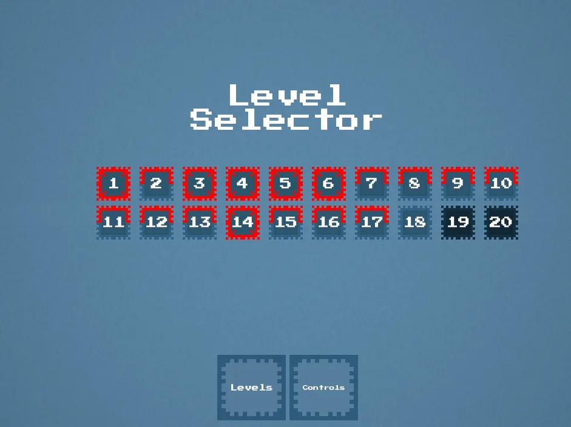

HeavyLight
- Engine
- Unity 2021, WebGL
- Language
- C#
- Role
- Solo
- Year
- 2022
- Time
- Under four weeks
A 2D puzzle platformer built on one rule: light has weight. Lamps push whatever stands in their beam, crates and you included. Every puzzle in the game is a consequence of that single rule.
Playable here. Also on itch.io.
The brief
HeavyLight was a challenge I set myself: make a game fast, under tight constraints, and keep it simple. One mechanic, some physics, and a lot of level design. It went from nothing to a finished web build in under four weeks.
The rule
A lamp's beam is a physical force. Stand in a sideways beam and it carries you along it. Stand under a lamp aimed up and it lifts you. You can nudge inside a beam but you cannot fight it, and the moment you step out you stop dead, so where a beam ends matters as much as where it starts.
Crates go further. A crate treats the beam as its new down. Point a lamp sideways and the crate falls sideways. Point it up and the crate climbs. Switch it off and the crate drops back to the floor.
Lamps
Most lamps start off. Walk up, press E, and the beam comes on for a set number of seconds, then clicks off on its own. Press again to cut it early. Some lamps blink on a cycle instead and cannot be touched. Timers and blink cycles are the whole difficulty curve: the same lamp is a lift in one level and a trap in the next.
Lamps at work. The upward beams lift the player to the crate's ledge, then a sideways beam carries the crate across the room and sets it down on the far ledge, right under the key.
One new thing per level
Twenty levels, and every one adds something the last did not have. The first few are only walking and jumping. Then the first lamp, then timers, then crates, then spikes, then beams that push down instead of up. By the end you are chaining lamps on timers while a crate falls in three directions. Nothing is introduced twice. That is what kept the game short and what made the level design take most of the four weeks.
The journal
ESC opens the journal, which is the pause menu and the level select in one. Every level has a mark: reached, passed, or fully completed. Fully completed means you found every clue in it. Any level can be replayed from the journal, and R restarts the current one, crates and all.

The journal. A full red frame is a level with every clue found, a half frame is passed, plain is reached, dark is not yet.
The clues
There is a story, and it is optional. Small glowing wisps sit around each level. Touch one and it bursts into a line of thought from the man in red, an investigator sent to an old town on a case everyone called normal. The houses carry the same symbols as a notebook he cannot read, and every house with the symbols was left in a hurry. Some wisps are red, and those speak in a different voice.
Find every clue in every level and the ending changes. Three secret levels open after the last one, and the thing behind the barred door makes an offer. Leave, fight, or sign.
Under the hood
The base is Unity's 2D platformer template, rebuilt where it mattered. The controller got coyote time, a jump buffer, a variable height jump and an input curve of my own. The beam push, the crate gravity, the lamp timers, the clue system and the journal are all mine. The build is WebGL and checks which site it runs on. A copy uploaded somewhere else sends you to a gif and quits.
Built to be reused
I wrote it as a base rather than a one-off. The follow-up, Conclusus, reused it for 30 levels and four new mechanics and took less time to build than the original. That was the actual test of whether the base was any good.
What it taught me
The camera is the one system I left to the engine's stock tools, and it is the one that fought me the whole way: per-level bounds, a preview pan to the exit at the start of each level, and a reset dance every time the player died. Since then, anything that has to feel right I write myself.